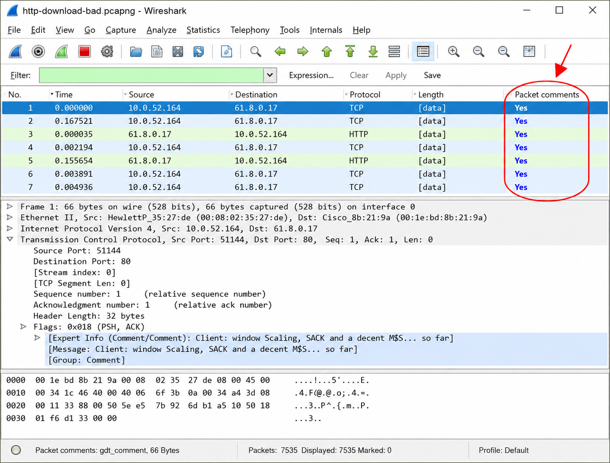
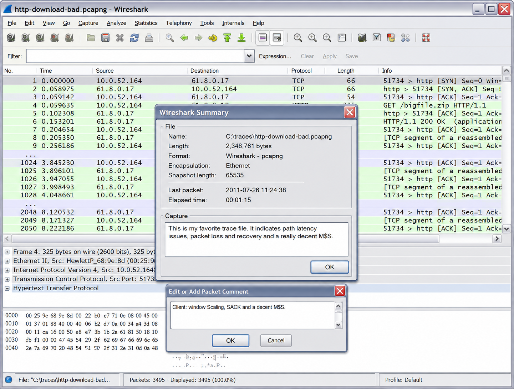
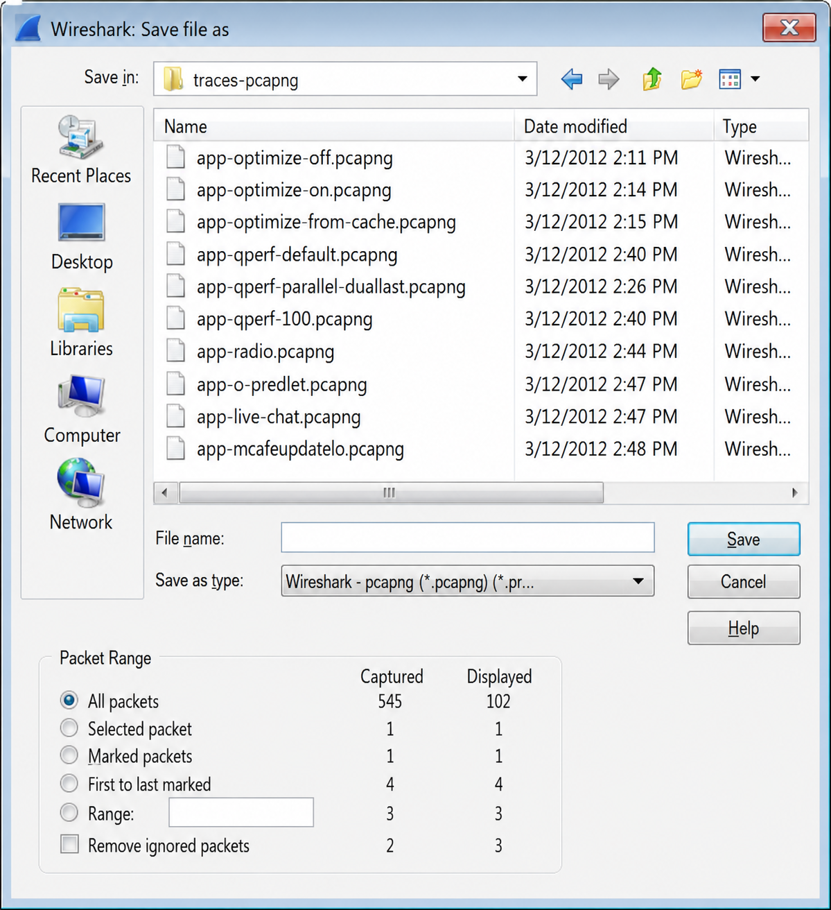
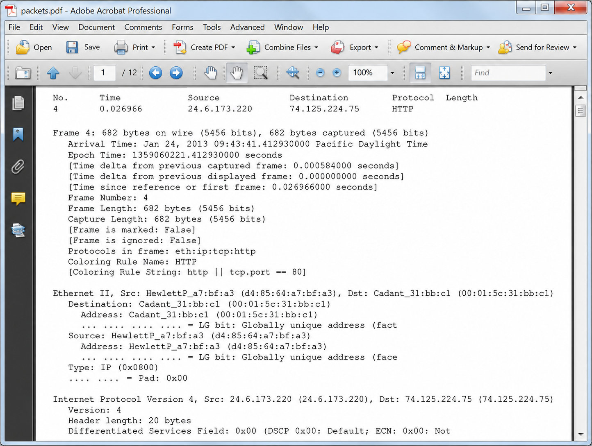
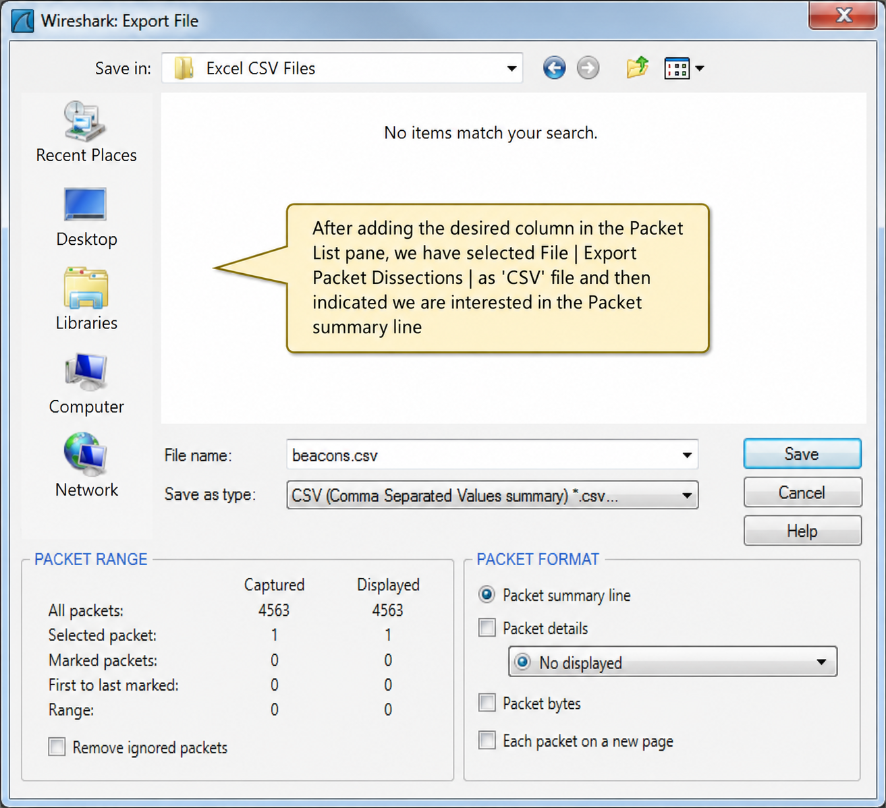
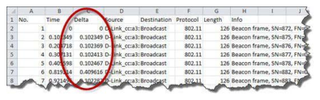
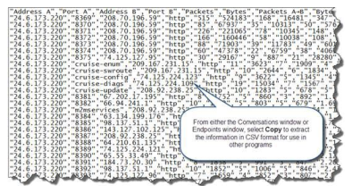
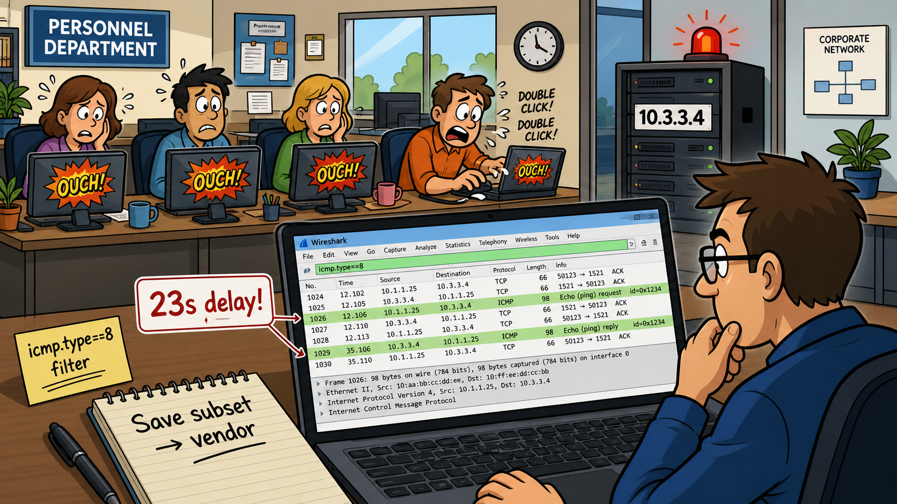

Wireshark lets you embed comments directly into trace files in pcap-ng format — both per-packet comments and trace-level comments. These comments survive the file being opened on any Wireshark 1.7+ system, turning a raw capture into a documented record.
- Why must a trace file be saved in pcap-ng format to retain annotations? What is it about the older pcap format that prevents this?
- Where can you quickly see a list of ALL packet comments in a large trace file without scrolling through every packet?
Annotate a Packet or an Entire Trace File
This long-awaited feature changes the way we explain what's going on in a trace file. Finally we can add our comments about an entire trace file or individual packets right inside the trace file. Your trace file must be saved in pcap-ng format in order to retain packet or trace file annotations. These comments are saved inside the trace file itself. When someone opens the pcap-ng file on another Wireshark system (version 1.7 or later), they will be able to read all your notes embedded in the trace file.
There are two quick ways to add a comment to a packet:
- Select a packet in the Packet List pane and choose Edit | Edit or Add Packet Comment from the Main Menu.
- Right click on the packet in the Packet List pane and select Edit or Add Packet Comment from the drop-down menu.
Packet comments are shown above the Frame section in the Packet Detail pane in a field called pkt_comment. You can easily right click and add this column to the Packet List pane to see which packets have comments. In addition, all your packet comments are listed under the Packet Comments tab in the Expert Infos window.
Figure 166 shows individual packet annotations, the Packet Comments column and the Expert Info Packet Comments tab. Note that you can double-click on a comment in the Expert Info tab to open and edit a comment.

To add, edit or cancel a comment linked to the entire trace file, simply click on the Comment icon in the lower left corner of the Status Bar (next to the Expert Info button). This trace file comment is displayed in the trace file Summary window as shown in Figure 167.

pkt_comment field in the Packet Details pane. The fastest way to see all packet comments is Expert Infos → Packet Comments tab. Trace-level comments appear in Statistics → Summary. Both types survive the file being shared to any Wireshark 1.7+ system.Wireshark can save subsets of a trace file — just filtered packets, just marked packets, or a packet range. It can also export the Packet List contents to CSV for use in a spreadsheet, or export SSL keys for post-capture decryption.
- You capture a 500MB trace file but only need to share the 12 packets that show a connection failure with a vendor. What is the most efficient Wireshark workflow to do this?
- When would you export packet content to CSV instead of just using Wireshark's own IO Graph or Statistics windows?
Save Filtered, Marked and Ranges of Packets
You can save a subset of packets based on the filters and marked packets. In addition, you can choose to save a range of packets regardless of the filter.
Figure 168 shows the Save As window. We can choose whether to save the displayed packets only, the selected packet, marked packets, first to last marked packets or a range of packets. In our trace file, we have 4 marked packets and 102 packets that match the display filter set. We are saving in pcap-ng format in order to retain any trace file or packet comments we created.

You can save trace files in numerous formats as well. Click on the drop down arrow to the right of the Save as type field to select a format other than Wireshark/tcpdump or pcap-ng formats. Alternately you can choose to print packets to a file (either a text file or a PostScript file). Select File | Print to open the Print window as shown in Figure 169.

When printing, you can choose to print just the Packet List pane summary line, the Packet Details (collapsed, as displayed, expanded) or the packet bytes. You can print each packet on a separate line. You have the same options to print displayed packets, selected packets, marked packets or a range of packets as you have when saving.

Export Packet Content for Use in Other Programs
Use File | Export Packet Dissections to create additional graphs, search for specific contents, or perform other advanced procedures on data captured. Packets can be exported in several formats:
| Format | Extension | Use Case |
|---|---|---|
| Plain text | *.txt | Human-readable output for reports |
| PostScript | *.ps | Professional printing |
| CSV (Packet Summary) | *.csv | Import into Excel for graphing |
| C Arrays (Packet Bytes) | *.c | Embed packets in C code |
| PSML (XML Packet Summary) | *.psml | XML-based packet summary |
| PDML (XML Packet Details) | *.pdml | Full XML packet details |
In the following example, we exported the contents of a filtered trace file to plot the beacons rate of WLAN packets. We exported to CSV format so we could graph and manipulate the information in a different format. We worked with a profile that contained a column for the delta time value — we wanted to graph the frequency of beacons in the trace file.

As shown in Figure 171, we named our exported file beacons.csv. Figure 172 shows the file opened in Excel. The Delta Time column is circled — that is the column we want to graph.

Export SSL Keys
You can easily export SSL keys using File | Export SSL Keys. The exported key is saved with a .key extension and contains values that can be used to decrypt SSL traffic captured in the trace file. Try exporting the SSL key in client_init_renego.pcap.
Save Conversations, Endpoints, IO Graphs and Flow Graph Information
Conversations, endpoints, IO Graph and other information may be saved as CSV format files, or in some cases, as graphic files (in the case of IO Graphs). Flow graphs are saved in ASCII text format only. Click the Save As button to save Flow Graph information. In Conversations, Endpoints or IO Graph windows, click the Copy button to save the data in CSV format as shown in Figure 174.

IO Graphs also have a Save button that allows you to save a graphic file in BMP, ICO, JPEG, PNG or TIFF format. Note that the saved graphic does not include the X- or Y-axis information.
Wireshark can export the raw bytes of any selected field or byte range from the Packet Details or Packet Bytes pane. This is different from exporting the dissected display — it gives you the binary payload of the selected field with no formatting overhead.
- Why would you export the raw bytes of an IP header rather than just printing the Packet Details view?
Export Packet Bytes
To export packet bytes, you must select a field or byte(s) in the Packet Details pane or Packet Bytes pane. Right click and select Export Selected Packet Bytes or press Ctrl+H.
Using this function, packets can only be exported in raw data format. This format is a hex format of the field(s) selected with no formatting data. For example, right click on the IP header in the Packet Details pane and choose Export Selected Packet Bytes to export the IP header of a packet into raw format.
Case Studies
The customer was having problems with connections to one of their database servers used by their personnel department. Sometimes the connections seemed to work fine — other times users couldn't get a connection. It was the dreaded "intermittent problem."
Because we didn't know when the problem would surface, we set up Wireshark off of a tap between one of the staff members and the switch. We configured Wireshark to capture traffic to a file set with each file set at a maximum of 30 MB. To reduce the traffic captured, we also used a capture filter set for all traffic to the database server (host 10.3.3.4).
We asked the users to work on their database as they usually did. To help us spot the problems in the trace files we employed a little trick on the users' workstations. We gave the users a nice little icon named "Ouch" on their desktop to launch a ping to the database server. We told the users to double-click on the icon when they experienced a serious problem in the communications to the database server. This helped us spot the problem points in the trace files.
After being informed that the problems were occurring again and that the four personnel department users had clicked "Ouch" at least three times each, we were ready to start looking at the traces. We simply filtered on ICMP ping packets (icmp.type==8) and marked these packets. Marking the packets made it easier to skip from one problem point to the next using Ctrl+Shift+N.
In each instance we saw the users were trying to access the same file and the server simply did not respond. The server sent the TCP ACK indicating that it received the request for the file, but it did not send the requested file. Repeated requests for that particular file went unanswered. The Time column indicated a delay averaging 23 seconds!
We began to carve out the sections in the trace file that demonstrated the problem. We selected File | Save As (Export Specified Packets as of Wireshark 1.8) and chose to save each range as separate trace files. We didn't need to give the vendor the entire trace file — we wanted to solve this one issue.
After about three days the vendor responded stating that they were aware of an "anomaly" in their program that limited the number of times the file in question could be accessed by the program. If more than a certain number of users tried to access the file in a short period of time, the program would just discard the request.
Wireshark showed exactly where the problem was. It didn't tell us why the problem was occurring, but it saved the IT staff days of troubleshooting time through guesswork, indicated that the network was not at fault, validated the user's claims of performance problems and helped management avoid spending money on equipment that would not have solved the problem.

Trace files and individual packets can be annotated in newer versions of Wireshark. File annotations are visible in the Summary window while individual packet comments can be located quickly through the Expert Infos window's Packet Comments tab. Trace files must be saved in pcap-ng format to retain annotations.
Wireshark offers numerous methods for saving packets, conversations, graphs and even bytes from a single packet. To separate a trace file into smaller parts, you can save just the filtered packets, just the marked packets or even a range of packets.
You can also export packet or file contents for manipulation in other programs. For example, you can add a column for the TCP Window Size field, export the file information to CSV format and build charts and graphs in another application. Many of the statistics windows also offer the Save feature.